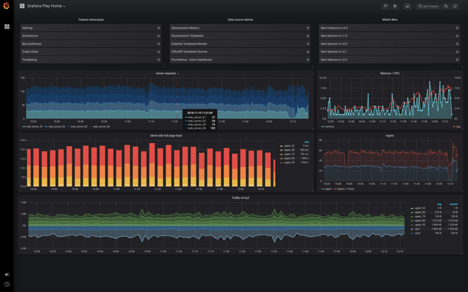

③ 데이터 결과 보고서
보통
구상 중

한 줄 요약
분석 결과를 일간·주간·월간 보고서(HTML/Excel/PDF)로 자동 작성해 정해진 시간에 공유하는 보고서 생성기
만들게 된 이유
매일 아침 수율 보고를 위해 데이터를 뽑고, 표를 정리하고, 그래프를 캡처해 붙이는 일이 반복된다. 형식은 매번 같은데 손이 많이 가고 사람마다 결과가 조금씩 다르다. 분석 결과를 정해진 양식에 자동으로 채워 넣어, 출근 전에 보고서가 이미 준비되어 있게 만들고 싶다.
주요 기능
- 보고서 종류: 일간(전일 실적), 주간(주차 추이), 월간(월 누적·전월 비교)
- 보고서 구성: 요약 KPI → 모델·교대별 수율 표 → 불량 파레토 → 추세 그래프 → 주요 이슈(SBL Alarm 발생 내역)
- 출력 형식: HTML(바로 열람), Excel(원본 데이터 포함), PDF(결재·출력용)
- 자동 실행: 매일 08:00 일간, 월요일 08:00 주간, 매월 1일 월간 보고서 생성
- 자동 공유: 공유 폴더(NAS) 저장 + 담당자 메일 발송
- 보고서 이력 목록 페이지에서 지난 보고서 다시 보기
대상 사용자
매일 생산 실적을 보고받는 팀장·관리자, 보고서를 작성하던 엔지니어 본인
사용할 기술 / AI 도구
- Python
- Jinja2
- openpyxl
- Plotly / matplotlib
- PDF 변환
- smtplib
- APScheduler
- Claude
AI에게 줄 첫 프롬프트 초안
Python으로 생산 수율 일간 보고서 자동 생성기를 만들어줘.
[입력]
- SQLite 테이블 production
(timestamp, line, model, shift, input, ok, ng, defect_code)
- 대상 기간: 전일 08:00 ~ 당일 08:00
[보고서 구성 - HTML 1장]
1. 제목, 대상 날짜, 생성 시각
2. KPI 카드: 총 투입, 양품, 불량, 양품율(소수점 1자리)
3. 모델 × 교대별 수율 표 (양품율 85.0% 이하 빨간색)
4. 불량 코드 TOP 5 파레토 차트
5. 시간대별 양품율 추이 그래프
6. SBL Alarm 발생 내역 표
[출력]
- Jinja2 템플릿으로 HTML 생성, 같은 내용으로 Excel(시트: 요약/원본) 저장
- 파일명: report_YYYYMMDD.html / .xlsx, 지정 폴더에 저장
- 매일 08:00 자동 실행 (APScheduler)
- 디자인: 화이트 배경 + 네이비(#000080), A4 인쇄에 맞는 레이아웃
경로·메일 수신자는 config.json으로 분리하고,
즉시 실행 가능한 전체 완성 코드로 줘.참고 자료
메모
- 1차는 HTML + Excel만, PDF와 메일 발송은 2차로
- 사내 메일 서버(SMTP) 외부 발송 허용 여부 확인 필요
- ② 분석 함수(analysis.py)를 그대로 불러 써서 계산 결과가 대시보드와 항상 같게 유지
- 3개 프로젝트 완성 후: 수집 → 분석 → 보고서를 하나의 서비스로 묶어 24시간 서버에서 운영